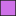
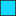
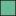

<!doctype html>
<html lang="en">
    <head>
        <meta charset="utf-8">
        <meta http-equiv="X-UA-Compatible" content="IE=edge">
        <meta name="viewport" content="initial-scale=1,user-scalable=no,maximum-scale=1,width=device-width">
        <meta name="mobile-web-app-capable" content="yes">
        <meta name="apple-mobile-web-app-capable" content="yes">
        <link rel="stylesheet" href="css/leaflet.css">
        <link rel="stylesheet" href="css/qgis2web.css"><link rel="stylesheet" href="css/fontawesome-all.min.css">
        <style>
        html, body, #map {
            width: 100%;
            height: 100%;
            padding: 0;
            margin: 0;
        }
        </style>
        <title></title>
    </head>
    <body>
        <div id="map">
        </div>
        <script src="js/qgis2web_expressions.js"></script>
        <script src="js/leaflet.js"></script>
        <script src="js/leaflet.rotatedMarker.js"></script>
        <script src="js/leaflet.pattern.js"></script>
        <script src="js/leaflet-hash.js"></script>
        <script src="js/Autolinker.min.js"></script>
        <script src="js/rbush.min.js"></script>
        <script src="js/labelgun.min.js"></script>
        <script src="js/labels.js"></script>
        <script src="data/IrvineSaltmarsh_1.js"></script>
        <script src="data/BogsideFlats_2.js"></script>
        <script src="data/CentralGrasslands_3.js"></script>
        <script src="data/BigIdeasBiohub_4.js"></script>
        <script src="data/NobelBarracks_5.js"></script>
        <script src="data/SeaLevelRiseFloods2030_6.js"></script>
        <script>
        var map = L.map('map', {
            zoomControl:true, maxZoom:28, minZoom:1
        }).fitBounds([[55.56998803051609,-4.805746687752232],[55.65052300933631,-4.527081591362166]]);
        var hash = new L.Hash(map);
        map.attributionControl.setPrefix('<a href="https://github.com/tomchadwin/qgis2web" target="_blank">qgis2web</a> &middot; <a href="https://leafletjs.com" title="A JS library for interactive maps">Leaflet</a> &middot; <a href="https://qgis.org">QGIS</a>');
        var autolinker = new Autolinker({truncate: {length: 30, location: 'smart'}});
        var bounds_group = new L.featureGroup([]);
        function setBounds() {
        }
        map.createPane('pane_OpenStreetMap_0');
        map.getPane('pane_OpenStreetMap_0').style.zIndex = 400;
        var layer_OpenStreetMap_0 = L.tileLayer('https://tile.openstreetmap.org/{z}/{x}/{y}.png', {
            pane: 'pane_OpenStreetMap_0',
            opacity: 1.0,
            attribution: '',
            minZoom: 1,
            maxZoom: 28,
            minNativeZoom: 0,
            maxNativeZoom: 19
        });
        layer_OpenStreetMap_0;
        map.addLayer(layer_OpenStreetMap_0);
        function pop_IrvineSaltmarsh_1(feature, layer) {
            var popupContent = '<table>\
                    <tr>\
                        <td colspan="2">' + (feature.properties['fid'] !== null ? autolinker.link(feature.properties['fid'].toLocaleString()) : '') + '</td>\
                    </tr>\
                </table>';
            layer.bindPopup(popupContent, {maxHeight: 400});
        }

        function style_IrvineSaltmarsh_1_0() {
            return {
                pane: 'pane_IrvineSaltmarsh_1',
                opacity: 1,
                color: 'rgba(35,35,35,1.0)',
                dashArray: '',
                lineCap: 'butt',
                lineJoin: 'miter',
                weight: 1.0, 
                fill: true,
                fillOpacity: 1,
                fillColor: 'rgba(106,187,150,1.0)',
                interactive: true,
            }
        }
        map.createPane('pane_IrvineSaltmarsh_1');
        map.getPane('pane_IrvineSaltmarsh_1').style.zIndex = 401;
        map.getPane('pane_IrvineSaltmarsh_1').style['mix-blend-mode'] = 'normal';
        var layer_IrvineSaltmarsh_1 = new L.geoJson(json_IrvineSaltmarsh_1, {
            attribution: '',
            interactive: true,
            dataVar: 'json_IrvineSaltmarsh_1',
            layerName: 'layer_IrvineSaltmarsh_1',
            pane: 'pane_IrvineSaltmarsh_1',
            onEachFeature: pop_IrvineSaltmarsh_1,
            style: style_IrvineSaltmarsh_1_0,
        });
        bounds_group.addLayer(layer_IrvineSaltmarsh_1);
        map.addLayer(layer_IrvineSaltmarsh_1);
        function pop_BogsideFlats_2(feature, layer) {
            var popupContent = '<table>\
                    <tr>\
                        <td colspan="2">' + (feature.properties['fid'] !== null ? autolinker.link(feature.properties['fid'].toLocaleString()) : '') + '</td>\
                    </tr>\
                </table>';
            layer.bindPopup(popupContent, {maxHeight: 400});
        }

        function style_BogsideFlats_2_0() {
            return {
                pane: 'pane_BogsideFlats_2',
                opacity: 1,
                color: 'rgba(35,35,35,1.0)',
                dashArray: '',
                lineCap: 'butt',
                lineJoin: 'miter',
                weight: 1.0, 
                fill: true,
                fillOpacity: 1,
                fillColor: 'rgba(98,98,98,1.0)',
                interactive: true,
            }
        }
        map.createPane('pane_BogsideFlats_2');
        map.getPane('pane_BogsideFlats_2').style.zIndex = 402;
        map.getPane('pane_BogsideFlats_2').style['mix-blend-mode'] = 'normal';
        var layer_BogsideFlats_2 = new L.geoJson(json_BogsideFlats_2, {
            attribution: '',
            interactive: true,
            dataVar: 'json_BogsideFlats_2',
            layerName: 'layer_BogsideFlats_2',
            pane: 'pane_BogsideFlats_2',
            onEachFeature: pop_BogsideFlats_2,
            style: style_BogsideFlats_2_0,
        });
        bounds_group.addLayer(layer_BogsideFlats_2);
        map.addLayer(layer_BogsideFlats_2);
        function pop_CentralGrasslands_3(feature, layer) {
            var popupContent = '<table>\
                    <tr>\
                        <td colspan="2">' + (feature.properties['fid'] !== null ? autolinker.link(feature.properties['fid'].toLocaleString()) : '') + '</td>\
                    </tr>\
                </table>';
            layer.bindPopup(popupContent, {maxHeight: 400});
        }

        function style_CentralGrasslands_3_0() {
            return {
                pane: 'pane_CentralGrasslands_3',
                opacity: 1,
                color: 'rgba(35,35,35,1.0)',
                dashArray: '',
                lineCap: 'butt',
                lineJoin: 'miter',
                weight: 1.0, 
                fill: true,
                fillOpacity: 1,
                fillColor: 'rgba(6,106,145,1.0)',
                interactive: true,
            }
        }
        map.createPane('pane_CentralGrasslands_3');
        map.getPane('pane_CentralGrasslands_3').style.zIndex = 403;
        map.getPane('pane_CentralGrasslands_3').style['mix-blend-mode'] = 'normal';
        var layer_CentralGrasslands_3 = new L.geoJson(json_CentralGrasslands_3, {
            attribution: '',
            interactive: true,
            dataVar: 'json_CentralGrasslands_3',
            layerName: 'layer_CentralGrasslands_3',
            pane: 'pane_CentralGrasslands_3',
            onEachFeature: pop_CentralGrasslands_3,
            style: style_CentralGrasslands_3_0,
        });
        bounds_group.addLayer(layer_CentralGrasslands_3);
        map.addLayer(layer_CentralGrasslands_3);
        function pop_BigIdeasBiohub_4(feature, layer) {
            var popupContent = '<table>\
                    <tr>\
                        <td colspan="2">' + (feature.properties['fid'] !== null ? autolinker.link(feature.properties['fid'].toLocaleString()) : '') + '</td>\
                    </tr>\
                </table>';
            layer.bindPopup(popupContent, {maxHeight: 400});
        }

        function style_BigIdeasBiohub_4_0() {
            return {
                pane: 'pane_BigIdeasBiohub_4',
                opacity: 1,
                color: 'rgba(35,35,35,1.0)',
                dashArray: '',
                lineCap: 'butt',
                lineJoin: 'miter',
                weight: 1.0, 
                fill: true,
                fillOpacity: 1,
                fillColor: 'rgba(23,217,255,1.0)',
                interactive: true,
            }
        }
        map.createPane('pane_BigIdeasBiohub_4');
        map.getPane('pane_BigIdeasBiohub_4').style.zIndex = 404;
        map.getPane('pane_BigIdeasBiohub_4').style['mix-blend-mode'] = 'normal';
        var layer_BigIdeasBiohub_4 = new L.geoJson(json_BigIdeasBiohub_4, {
            attribution: '',
            interactive: true,
            dataVar: 'json_BigIdeasBiohub_4',
            layerName: 'layer_BigIdeasBiohub_4',
            pane: 'pane_BigIdeasBiohub_4',
            onEachFeature: pop_BigIdeasBiohub_4,
            style: style_BigIdeasBiohub_4_0,
        });
        bounds_group.addLayer(layer_BigIdeasBiohub_4);
        map.addLayer(layer_BigIdeasBiohub_4);
        function pop_NobelBarracks_5(feature, layer) {
            var popupContent = '<table>\
                    <tr>\
                        <td colspan="2">' + (feature.properties['fid'] !== null ? autolinker.link(feature.properties['fid'].toLocaleString()) : '') + '</td>\
                    </tr>\
                </table>';
            layer.bindPopup(popupContent, {maxHeight: 400});
        }

        function style_NobelBarracks_5_0() {
            return {
                pane: 'pane_NobelBarracks_5',
                opacity: 1,
                color: 'rgba(35,35,35,1.0)',
                dashArray: '',
                lineCap: 'butt',
                lineJoin: 'miter',
                weight: 1.0, 
                fill: true,
                fillOpacity: 1,
                fillColor: 'rgba(206,113,232,1.0)',
                interactive: true,
            }
        }
        map.createPane('pane_NobelBarracks_5');
        map.getPane('pane_NobelBarracks_5').style.zIndex = 405;
        map.getPane('pane_NobelBarracks_5').style['mix-blend-mode'] = 'normal';
        var layer_NobelBarracks_5 = new L.geoJson(json_NobelBarracks_5, {
            attribution: '',
            interactive: true,
            dataVar: 'json_NobelBarracks_5',
            layerName: 'layer_NobelBarracks_5',
            pane: 'pane_NobelBarracks_5',
            onEachFeature: pop_NobelBarracks_5,
            style: style_NobelBarracks_5_0,
        });
        bounds_group.addLayer(layer_NobelBarracks_5);
        map.addLayer(layer_NobelBarracks_5);
        function pop_SeaLevelRiseFloods2030_6(feature, layer) {
            var popupContent = '<table>\
                    <tr>\
                        <td colspan="2">' + (feature.properties['fid'] !== null ? autolinker.link(feature.properties['fid'].toLocaleString()) : '') + '</td>\
                    </tr>\
                    <tr>\
                        <td colspan="2">' + (feature.properties['DN'] !== null ? autolinker.link(feature.properties['DN'].toLocaleString()) : '') + '</td>\
                    </tr>\
                </table>';
            layer.bindPopup(popupContent, {maxHeight: 400});
        }

        function style_SeaLevelRiseFloods2030_6_0() {
            return {
                pane: 'pane_SeaLevelRiseFloods2030_6',
                stroke: false, 
                fill: true,
                fillOpacity: 1,
                fillColor: 'rgba(179,19,25,1.0)',
                interactive: true,
            }
        }
        map.createPane('pane_SeaLevelRiseFloods2030_6');
        map.getPane('pane_SeaLevelRiseFloods2030_6').style.zIndex = 406;
        map.getPane('pane_SeaLevelRiseFloods2030_6').style['mix-blend-mode'] = 'normal';
        var layer_SeaLevelRiseFloods2030_6 = new L.geoJson(json_SeaLevelRiseFloods2030_6, {
            attribution: '',
            interactive: true,
            dataVar: 'json_SeaLevelRiseFloods2030_6',
            layerName: 'layer_SeaLevelRiseFloods2030_6',
            pane: 'pane_SeaLevelRiseFloods2030_6',
            onEachFeature: pop_SeaLevelRiseFloods2030_6,
            style: style_SeaLevelRiseFloods2030_6_0,
        });
        bounds_group.addLayer(layer_SeaLevelRiseFloods2030_6);
        map.addLayer(layer_SeaLevelRiseFloods2030_6);
        var baseMaps = {};
        L.control.layers(baseMaps,{' Sea-Level Rise + Floods (2030)': layer_SeaLevelRiseFloods2030_6,' Nobel Barracks': layer_NobelBarracks_5,' Big Ideas Biohub': layer_BigIdeasBiohub_4,' Central Grasslands': layer_CentralGrasslands_3,' Bogside Flats': layer_BogsideFlats_2,' Irvine Saltmarsh': layer_IrvineSaltmarsh_1,"OpenStreetMap": layer_OpenStreetMap_0,},{collapsed:false}).addTo(map);
        setBounds();
        </script>
    </body>
</html>
